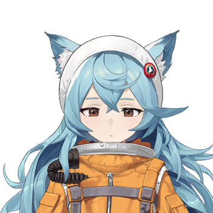
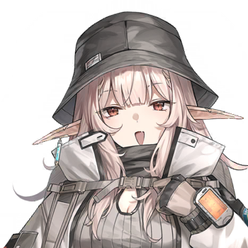
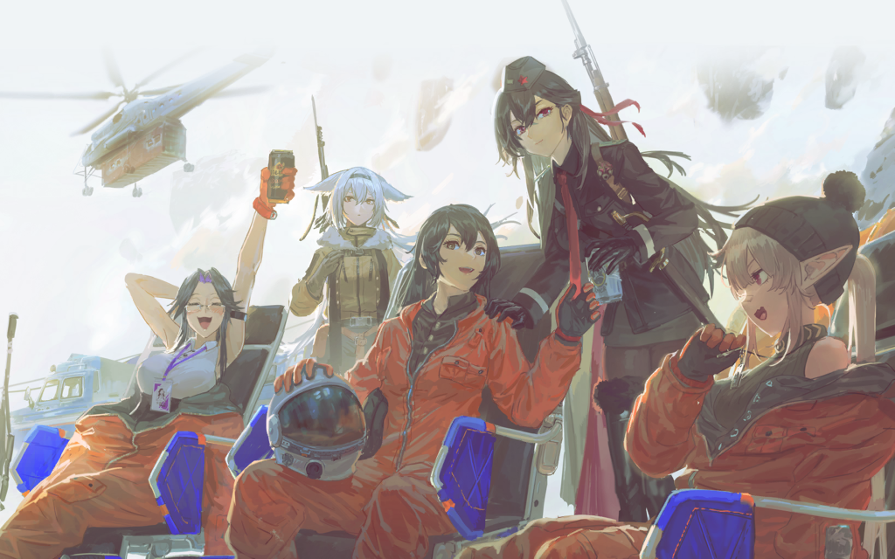
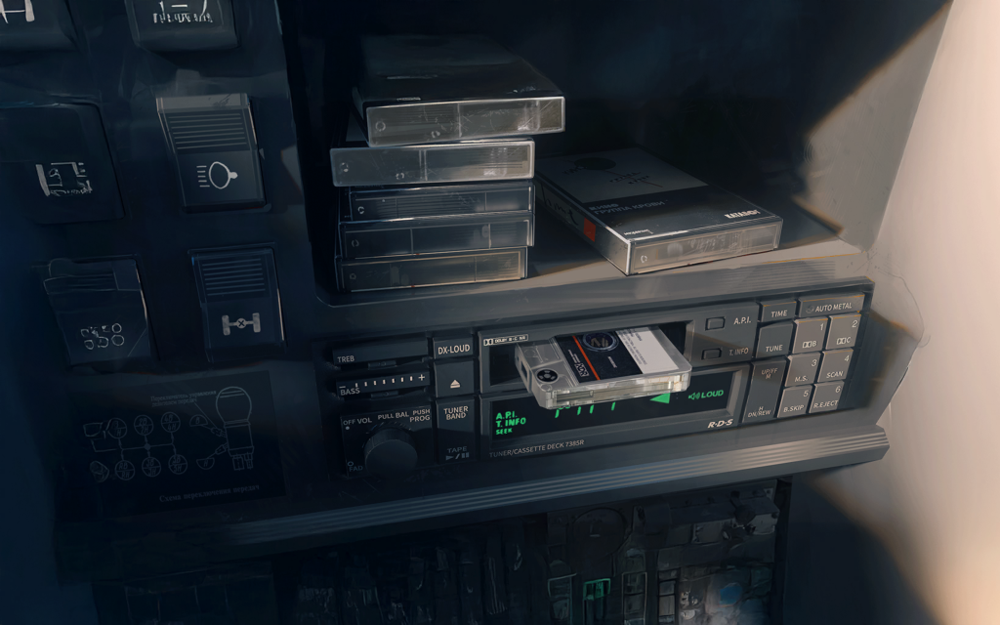

Back to main page :
[Main page]
[Story List]
[Next Chapter]
0-4 Prologue
Characters
Pola

yulia
Warant officer
Lida
Valena
Lisa

Karin
Karula
Elena
Summary
As the squad repelled the scavengers, the Warrant Officer and others finally enjoyed the rest they deserved after their space travel. As everyone prepared to travel to Unity City, the capital of the United Territories, the Warrant Officer handed over the cargo he had risked his life to protect to Elena—a suitcase full of cassette tapes.
[Pola and the scavengers fled in panic]
“Vice Master” (Pola)
Waaah, why are these guys so strong?
"Postman" (yulia)
I was away for a split second, and you already came running tail here?
“Vice Master”
B-Big Boss? I—I was just starving to death and wanted to find something to eat…
"Postman"
You didn't find any food, but you attracted the 8th Squad instead.
“Vice Master”
The 8th Squad? Is it that terrifying 8th Squad?
"Postman"
Are you scared now?
“Vice Master”
Y-Yes, I'm scared! I want to go home for dinner!
[Scene transition]
Lida
Sister Valena!
Valena
Oh my, let me look at you. My, it's only been a few months, and Lida has grown taller again.
Valena
As for comrade Warrant Officer, you're still strolling through a hail of bullets completely unfazed and without a single scratch.
Warrant Officer
Compared to the battles we've been through before, this is nothing.
Valena
Mm, I knew a mere handful of scavengers wouldn't be enough to trouble comrade Warrant Officer.
Lisa
Her eyes were literally burning with anxiety when we were in the vehicle just now.
Karin
Heheh, a young lady always has to act a bit reserved in front of her sweetheart!
Warrant Officer
We’re safe and sound thanks to Miss Karula’s valiant fight.
Karula
Hmph, hmph! I wouldn't call it valiant. These scavengers look all fierce and evil, but they’re not really that competent.
Karula
Ouch, I fired too many bullets, my shoulder hurts so much from the butt of the gun... Ugh, my chest also feels a bit…
Warrant Officer
That's caused by not bracing the rifle stock firmly against your shoulder; it's unavoidable for a first-timer.
Karula
Ah, yes. One look at Mr. Warrant Officer and you can tell he's a veteran of a hundred battles—firing so many shots and being completely fine.
Warrant Officer
Actually, I didn't fire a single shot.
Karula
Eh?
Warrant Officer
I lost the ability to fire a gun during the civil war, so I didn’t shoot at the enemy just now either.
Karula
Um, I'm sorry... I shouldn't have brought that up.
Warrant Officer
No need to apologize, it's fine.
Karula
But wait... does that mean the only fighter among the three of us is me, a conscript?
Karula
Why didn't you tell me that earlier?!
Warrant Officer
I was afraid you'd get nervous.
Karula
Why didn't you tell me that earlier?!
Karula
I... Sigh, it's too late to be nervous now anyway. Right now I just want to lie down and have something to drink…
Valena
There are folding chairs prepared for the landing personnel inside the vehicle, so you can all have a proper rest now. As for drinks... ah, we actually prepared those too.
Karula
Really? I—I was just saying that casually.
Valena
Interstellar heroes who dedicate themselves to the cause of the cosmos certainly deserve to be welcomed with fine wine—the "Bluebird" was specifically equipped to welcome people like you.
Karula
Saying it like that makes me too embarrassed to drink it. I'm just a space tourist who spent 100,000 Vespuccian Pounds on a ticket to come to Nox.
Karula
But I definitely need to lie on that chair. I don't have a single bit of strength left right now, my body feels so heavy…
Lida
Is it because you haven't adapted to the gravity of planet Nox yet?
Lida
Sister Karula spent three days in space, and the moment she landed she threw herself into a battle to protect me and big brother. She’s a true interstellar hero!
Karula
Ahehheh... being praised by a cute little girl makes me kind of happy…
Valena
In addition, there is also a camera on the vehicle used for taking heroic photos of the landing crew.
Karula
Mm—successfully setting foot on another planet is definitely something worth taking a commemorative photo for.
Lida
For me, does this count as... returning to my hometown? But I was too small when I left, I don't remember anything at all.
Valena
Leaving a planet you lived on for ten years, I wonder if Lida will be able to get used to this hometown.
Warrant Officer
After you left, I had no one that I could trust on Earth. I could only bring her along with me... this might make her suffer more hardships.
Valena
At least she is far away from the casinos and secret brothels in the Port of Phalanstery, and those drunken tourists... This might not be a bad thing for her upbringing.
Warrant Officer
Yes. Valena, can you tell me? You accepted this mission because…
Valena
Ah, the camera's timer is almost up!
Karula
Yay, cheers to a successful landing!

[After the three of them had taken some rest and adapted to the gravity]
Elena
Hello, Comrade Warrant Officer. I am Elena, Captain of the 8th Squad of the Joint Development Region Security Bureau.
Elena
Next, please ride with me in the "Bluebird" to the landing zone. I will escort you to Unity City, the capital of the United Territories.
Elena
As for this lady, Lieutenant Claudia and Sergeant Lisa will escort you in another vehicle.
Karula
Yes yes, we'll follow your arrangements for everything... By the way, I should return this gun to you, isn't this something you need for your "expedition"?
Warrant Officer
We have plenty of the same guns. You might as well keep this one as a souvenir.
Lida
That's right, keep it for self-defense! And sister Karula looks really cool carrying a gun!
Karula
Ahehheh, is that so? Then I'll shamelessly accept it—see you guys in Unity City!
Elena
Apologies, before boarding the vehicle, I have one matter to ask.
Elena
According to the contract established between the Primorsky Republic and the Joint Development Region Management Committee.
Elena
Our 8th Squad of the Security Bureau is providing a security contract to the "Eastern" Project Preparatory Team to carry out its work within the United Territories, and the full contract fee should have been paid at the end of last month.
Warrant Officer
The payment delay was a blunder on our side. The entire contract fee is right here.
[An unremarkable reddish-brown leather suitcase is handed over—it’s extremely light in terms of cash.]
Elena
It was precisely to protect this money that you ended up in such danger, being surrounded and attacked by scavengers…
Warrant Officer
It’s my duty.
Elena
Please board the vehicle. Now, it will be us, and not those scavengers, welcoming you home on behalf of the United Territories.
{Warrant Officer’s Inner Monologue/Narrative}
[10 years ago, the car I was in traveled in the opposite direction across this cosmic avenue, heading towards my homeland, which I had never seen before.]
[These giant aerospace posters promised me the brightest future and the most promising prospects.]
[Valena: I’m so glad you landed safely. The failure rate of landing capsules has been increasing lately.]
[Ever since the dissolution of the Union five years ago, aerospace equipment has never been updated.]
[The Antey Group got the spaceships left behind by the Alliance for free, and their minds are entirely focused on running a business without any investment. As long as they are willing to lower prices, there will always be cheapskates willing to ride it.]
[Valena: I was so afraid that some of the personnel and cargo would be lost. The "Eastern" Project was already stretched thin in every aspect.]
[The security forces you recruited here on Nox are far too poorly trained that they can't even handle scavengers. How can you expect them to protect your convoy on the road.]
[Valena: There’s a serious lack of professional instructors and equipment here. I’ve been considering sending them to Earth for training.]
[Valena: But now, returning to Earth from Nox is much more difficult than coming over from Earth…]
[The 8th Squad on the other hand is quite formidable.]
[Valena: In accordance with the contract between the Primorsky Republic and the Joint Development Region.]
[Valena: They can only provide security assistance for our activities within the United Territories, whereas searching for the "Legacy " will definitely require…]
Karin
Captain, I figured it out.
Elena
What did you figure out?
Karin
That new team leader, the one called "Warrant Officer"... is Valena's ex-boyfriend!
Karin
That cold, unspoken understanding between them, that passion and wariness beneath politeness…
Elena
Stop, stop, stop. The leader just took office; it's not good to speculate about their romantic history like this.
Karin
Exactly, since we’re going to be working together, we need to figure out their relationship! In my opinion, that little girl is probably the Warrant Officer's current girlfriend.
Elena
It's his sister.
Karin
But look, that little girl is clearly…
Elena
I know, she has Circassian ears, so she must be the Warrant Officer’s half-sister, or a cousin, or something.
Karin
Yes! This kind of half-feasible and half-forbidden relationship... makes it all more alluring and dangerous!
Karin
Seeing her beloved brother chatting so passionately with his ex-girlfriend, her heart must be filled with a mix of emotions now.
Karin
The clash between the ex-girlfriend and the current girlfriend sparked a fierce...
Elena
Sigh, stop fantasizing things. I need to check the quality of the contract money.
[Elena opened the reddish-brown suitcase. She saw what she wanted: a suitcase full of cassette tapes, all showing traces of damage from mechanical perforation on the surface.]
[Narrator]
[Their fingers hovered for a moment, and finally selected a piece of cassette tape completely decorated with solid color geometric figures in the colorful packaging box. ]

[Story List]
[Next Chapter]


{kind=link}
{kind=link}
{kind=link}